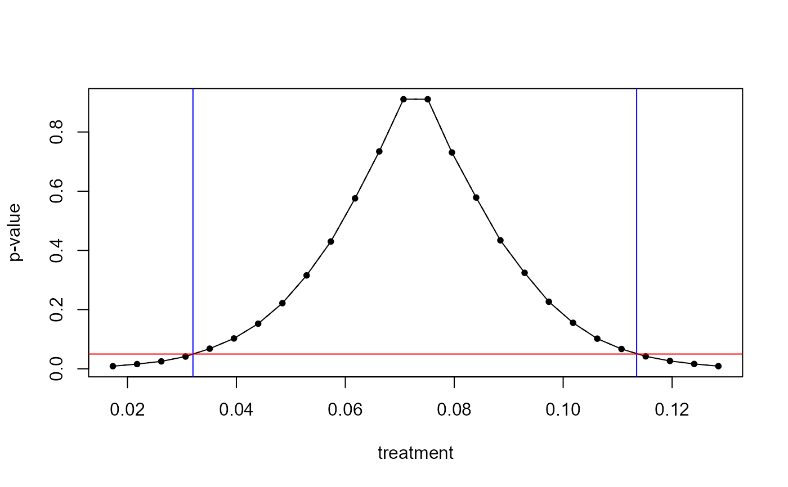

boottest is a S3 method that allows for fast wild cluster
bootstrap inference for objects of class lm, fixest and felm by implementing
the fast wild bootstrap algorithm developed in Roodman et al., 2019.
Details
Technical Details For technical details, either take a look at the references below, or check out the wild (cluster) bootstrap vignette.
Setting Seeds
To guarantee reproducibility, you can either use boottest()'s seed
function argument, or
set a global random seed via
set.seed()when usingthe lean algorithm (via
engine = "R-lean"), 2) the heteroskedastic wild bootstrapthe wild cluster bootstrap via
engine = "R"with Mammen weights or 4)engine = "WildBootTests.jl"
dqrng::dqset.seed()when usingengine = "R"for Rademacher, Webb or Normal weights
Stata, Julia and Python Implementations
The fast wild cluster bootstrap algorithms are further implemented in the following software packages:
Stata:boottest
Julia:WildBootTests.jl
Python:wildboottest
References
Roodman et al., 2019, "Fast and wild: Bootstrap inference in STATA using boottest", The STATA Journal. (https://ideas.repec.org/p/qed/wpaper/1406.html)
MacKinnon, James G., Morten Ørregaard Nielsen, and Matthew D. Webb. Fast and reliable jackknife and bootstrap methods for cluster-robust inference. No. 1485. 2022.
Cameron, A. Colin, Jonah B. Gelbach, and Douglas L. Miller. "Bootstrap-based improvements for inference with clustered errors." The Review of Economics and Statistics 90.3 (2008): 414-427.
Cameron, A.Colin & Douglas L. Miller. "A practitioner's guide to cluster-robust inference" Journal of Human Resources (2015) doi:10.3368/jhr.50.2.317
Davidson & MacKinnon. "Wild Bootstrap Tests for IV regression" Journal of Economics and Business Statistics (2010) doi:10.1198/jbes.2009.07221
MacKinnon, James G., and Matthew D. Webb. "The wild bootstrap for few (treated) clusters." The Econometrics Journal 21.2 (2018): 114-135.
MacKinnon, James G., and Matthew D. Webb. "Cluster-robust inference: A guide to empirical practice" Journal of Econometrics (2022) doi:10.1016/j.jeconom.2022.04.001
MacKinnon, James. "Wild cluster bootstrap confidence intervals." L'Actualite economique 91.1-2 (2015): 11-33.
Webb, Matthew D. "Reworking wild bootstrap based inference for clustered errors" . No. 1315. Queen's Economics Department Working Paper, 2013.
Examples
requireNamespace("fwildclusterboot")
data(voters)
lm_fit <- lm(
proposition_vote ~ treatment + ideology1 + log_income + Q1_immigration,
data = voters
)
boot <- boottest(lm_fit,
B = 9999,
param = "treatment",
clustid = "group_id1"
)
#> Warning: Please note that the seeding behavior for random number generation for
#> `boottest()` has changed with `fwildclusterboot` version 0.13.
#>
#> It will no longer be possible to exactly reproduce results produced by versions
#> lower than 0.13.
#>
#> If your prior results were produced under sufficiently many bootstrap
#> iterations, none of your conclusions will change. For more details about this
#> change, please read the notes in
#> [news.md](https://cran.r-project.org/web/packages/fwildclusterboot/news/news.html).
#> This warning is displayed once per session.
#> Too guarantee reproducibility, don't forget to set a global random seed
#> **both** via `set.seed()` and `dqrng::dqset.seed()`.
#> This message is displayed once every 8 hours.
summary(boot)
#> boottest.lm(object = lm_fit, param = "treatment", B = 9999, clustid = "group_id1")
#>
#> Hypothesis: 1*treatment = 0
#> Observations: 300
#> Bootstr. Type: rademacher
#> Clustering: 1-way
#> Confidence Sets: 95%
#> Number of Clusters: 40
#>
#> term estimate statistic p.value conf.low conf.high
#> 1 1*treatment = 0 0.073 3.709 0.001 0.033 0.113
print(boot)
#> boottest.lm(object = lm_fit, param = "treatment", B = 9999, clustid = "group_id1")
#>
#> p value: 0.001
#> confidence interval: 0.0328 0.1134
#> test statistic 3.7094
plot(boot)

nobs(boot)
#> [1] 300
pval(boot)
#> [1] 0.0010001
confint(boot)
#> [1] 0.03284347 0.11342134
generics::tidy(boot)
#> term estimate statistic p.value conf.low conf.high
#> 1 1*treatment = 0 0.07290769 3.709435 0.0010001 0.03284347 0.1134213